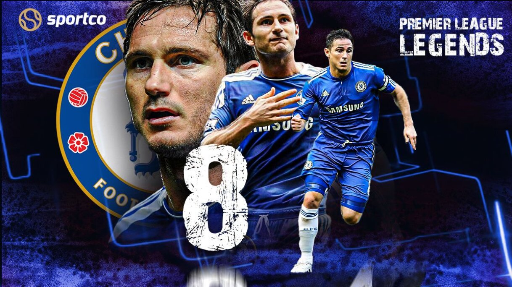

Frank James Lampard OBE (born 20 June 1978) is an English professional football manager and former player who was the head coach of Premier League club Chelsea from July 2019 until January 2021. He is widely considered to be one of Chelsea's greatest ever players, and one of the greatest midfielders of his generation. He has the record of the most goals from midfield in the Premier league and statistically he was the Premier League Player of the Decade from 2000 to 2010. Lampard is one of nine players, and the only midfielder, to have scored 150 or more goals in the Premier League. He is fourth in the Premier League's all-time assists ranking, with 102 assists. Lampard holds a number of additional Chelsea and Premier League records, and has won PFA Fans' Player of the Year and the FWA Tribute Award. During his career, he was named in the PFA Team of the Year three times, finished as the Premier League's top assist provider three times, and was named in the FIFPro World XI and a MLS All-Star. After departing, Lampard was named in the Chelsea Team of the Decade as voted for by Chelsea fans, and into the Premier League Hall of Fame.
